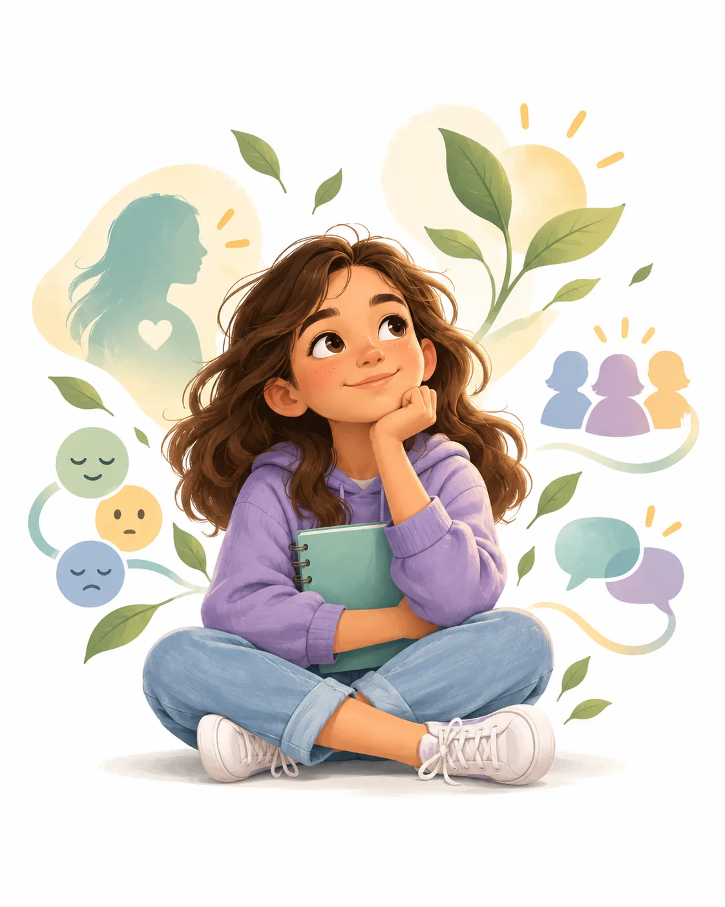

Comprendo mis cambios
Para muchas personas esta etapa coincide con el inicio de cambios puberales y una mayor conciencia de cómo son vistas por los demás. Aumentan la necesidad de privacidad, la comparación social y la importancia del grupo. También aparecen nuevas capacidades para reflexionar sobre sí mismos, aunque todavía necesitan estructura, acompañamiento y conversación abierta.

¿Qué quieres comprender primero?
Cada tarjeta abre una página propia con características, ejemplos cotidianos, actividades y habilidades que se pueden fortalecer.
Cuerpo
Mi cuerpo cambia y necesito información clara, no comparaciones.
Explorar a profundidad →Pensamiento
Empiezo a pensar de forma más compleja, aunque todavía estoy practicando.
Explorar a profundidad →Emociones
Puedo sentir muchas cosas a la vez y no siempre sé cómo nombrarlas.
Explorar a profundidad →Relaciones
Pertenecer importa mucho, y aprender límites también.
Explorar a profundidad →El objetivo no es acelerar el desarrollo, sino acompañarlo.
Estas fuentes orientan la información educativa. Los rangos del sitio son una organización pedagógica y no sustituyen una evaluación individual.